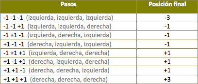

La tabla muestra todas las posibles posiciones de la partícula después de haber dado tres pasos. Puedes ver que de las ocho posibles combinaciones, sólo dos (-3 y +3) resultan en un movimiento perceptible en la escala inicial de nuestra simulación.

De la misma manera, Einstein argumentó, no podemos ver los pequeños y rápidos movimientos de los granos de polen debidos a las colisiones moleculares, pero sí alcanzamos a distinguir los desplazamientos grandes aunque sean poco frecuentes.
En el caso del polen bombardeado por las moléculas de agua, los desplazamientos visibles se deben a que en ocasiones habrá muchas más moléculas pegando de un mismo lado, por lo que el polen de repente “brincará” una distancia mucho mayor.